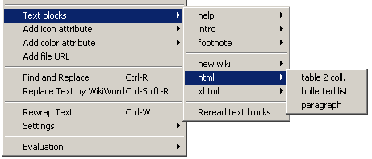

parent nodes: SpellChecking | TheEditor | UserFiles | WikiFiles
Text Blocks
Contents:
Back
General
The editor supports "text blocks"; a facility with which you can insert often used texts into a page with the click on a menu option. The menu option in question is "Editor / Text blocks" in the main menu. This menu item in principal is an empty one - but for an example text - but you can fill it with your own options, each representing an often used custom text.
The func pages
The specifications for these text blocks are located in the "func. pages" of the views tree. As usual in WikidPad there are two pages:Global text blocks: for text blocks that are to be available in all of your wiki's.Wiki text blocks: for text blocks that are specific to the wiki, they are specified in.
When changes are made to one of these pages, the menu is updated after one of them is saved (manually or automatically).
The disk files
Instead of using the WikidPad editor and changing your text blocks in the func. pages, you can also use an external editor and change the blocks in the disk files, they are kept in.
When the compact backend is used for a wiki, the "wiki text blocks" are stored in the database itself, so there is no separate file for te "wiki text blocks" that can be edited. For this type the editing has to be done in the func. pages.
The layout and format for text blocks in the files is the same as that in the func. pages. After you have modified and saved one of the files, while WikidPad is executing, you can update the text blocks menu by selecting "Reread text blocks" at the bottom of the "Text blocks" (sub)menu. This reads the "TextBlocks.wiki" files again and rebuilds the menu.
The menu
The text blocks (sub)menu consists of three sections separated by a horizontal line; from top to bottom these are:Wiki text block itemsGlobal text block itemsWikidpad menu items
In order to prevent the menu from becomming too long to be of any practical use, text block items can be grouped into submenu's. These can be single level or multi level submenu's.
For each menu item you can decide whether it should show the text block itself ór a descriptive name, that you can give it. The menu items and submenu's are shown in the same order as they are specified in the files/func. pages.

Example text blocks menu
Top
Text block format
General
Each line on the page represents one text block entry in the menu and their following order on the page specifies their order in the menu. Indentation of a line controls whether a text block is in the "Text blocks" menu itself or in a submenu; the level of indentation defines the level of a submenu. Each entry consists of a combination of title, flags and/or content. The title is shown in the menu, the content is inserted or appended when choosing the menu item, the flag controls further insertion details.
Format
The general format for a text block item is:
Where the equals sign "=" is obligatory and:name = the name with which the item will be shown in the menu
optionalthis can either be the name of a text block or the name of a submenuif ommitted, the name is derived from the text block value
flag = a parameter that controls the insertion of the text
optional; currently only the "a" flag is supporteda = text is appended to the end of the pagenot-a = text is inserted at cursor position
value = the text to be inserted
optionalif not specified, then the item is expected to be submenu namevalue can contain escape sequences like:
\n to insert a "new line"\t to insert a "tab"
Top
Examples
General
How to use the format to define text blocks is shown using some simple - but not so usefull - examples. For real examples see: "Wiki text blocks" in the func. pages. The "new wiki", "html" and "xhtml" submenu's in there are actually "global text blocks", but since those can't be destributed with this wiki, they have been added to the "wiki text blocks". You can cut them and paste them back into the global page if you want.
Single items
To add a single item to the menu; specify it as either:=This will be inserted
This is a name=This will be inserted
They both insert "This will be inserted" at the current cursor position in the text; the difference is how they appear in the menu: the first one with the text itself and the second one with "This is a name", like in the screenshot below.
If you don't want the text to be inserted at cursor position, but appended to the end of the page, add the "a" flag; like:;a=This will be inserted
This is a name;a=This will be inserted
Submenu's
To group a number of single items in a submenu, indent them and preferably prefix them with a submenu name. The format for a submenu name is "name=". Make sure there is no whitespace after the equal sign, otherwise it will be interpreted as a block text item! If a submenu name is not specified, a submenu will still be created and it will be given the identifier of the first indented single item.
To add a submenu with two items to the example above, specify it like this:=This will be inserted
This is a name=This will be inserted
Also menu=
=This will also be inserted
This is also a name=This will also be inserted
Resulting in a menu as shown in the screenshot below.
Nested submenu's
To add a nested submenu, indent it one level further, like in this example:=This will be inserted
This is a name=This will be inserted
Also menu=
=This will also be inserted
This is also a name=This will also be inserted
Nested menu=
=This will be inserted to
This is yet another name=This will be inserted to
That will result in a menu like in the screenshot below.
Top
Usage
Text blocks can be used for words or phrases that are used often, but they are even more usefull for inserting large chunks of page text, with a standard layout in those cases where templates are not really applicable. Like those in the "Text blocks" / "help", "intro" and "new wiki" submenu's.
They are also quite usefull for creating and inserting "templates" for larger html constructs. Like the "Text blocks" / html / "table 2 coll." item, that would insert this:
<table>
<tr><td>cell1.1</td><td>cell1.2</td></tr>
<tr><td>cell2.1</td><td>cell2.2</td></tr>
<tr><td>cell3.1</td><td>cell3.2</td></tr>
</table>
[paragraph_mode: true]
That you can then copy, paste and change until it is what you need the table for. And it would also remember you to not forget to set the paragraph mode for the page to "true". For an example of what such a table looks like in WikidPad, see the "Tables" example in: HtmlInternal.
An additional use is as an easy reminder for codes you often use, but that are not quite easy to remember, like html entity and color codes. You could create a list of them like in the example below:entities=
bullet=•
nb space=
angle quot. left= «
angle quot. right= »
euro=€
copyright=©
square root=√
html colors=
Cornsilk=#FFF8DC
Coral=#FF7F50
Dark Orchid=#9932CC
ForestGreen=#228B22
Gold=#FFD700
Orange=#FFA500
YellowGreen=#9ACD32
Python colors=
Coral=#FF7F00
Dark Orchid=#9932CC
Forest Green=#238E23
Gold=#CC7F32
Orange=#CC3232
Yellow Green=#99CC32
That would create Textblock submenu's like in the screenshot below.
From then on all you have to do, is to select the item in the menu and the code will be inserted into your page text or html attribute.
The example uses twó lists of color codes: the formal html codes and a list of Python codes. As can be seen from the lists, the python codes deviate from the standard html specifications and sometimes quite a bit to. Look at the image below, where the left hand side shows the html color "Gold" and the right hand side its python counterpart.
WikidPad uses a python library for screenhandling and sortlike stuff, so it's colorscheme is the deviant python one. Depending on what you need done where, you might need the one or the other color list. Ánd a good "screen color picker" to find out what the real hex color code is for the python colors WikidPad uses. The freeware program ColorPic might be a good choice.
Top
Settings
• Wiki text blocks
• Global text blocks
Top
previous: Back
parents: SpellChecking, TheEditor, UserFiles, WikiFiles
[help.status: done]